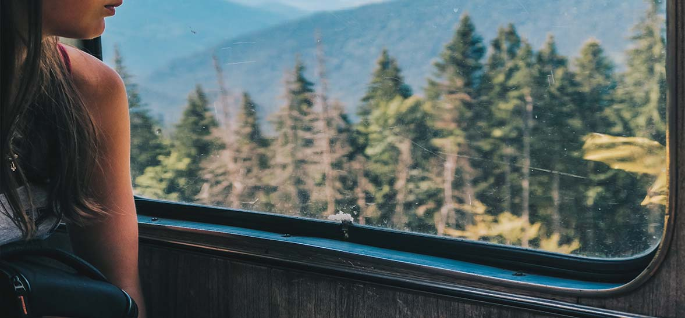

Топ-10 причин мандрувати Україною
Хоча сьогодні чимало людей розглядає літній відпочинок в Україні як одне з антикризових рішень, ми дотримуємося іншої точки зору. Мандрувати Україною не тільки дешевше, але й корисніше! Наша команда знайшла переконливі аргументи, чому в цьому році у пошуках натхнення вам може не знадобитися закордонний паспорт.
1. Бути героєм власної епопеї
Мандри Україною – нелегке випробування, яке всіляко спонукає до виходу із зони комфорту та рівних доріг в умови відсутності клімат-контролю, чіткого графіку прибуття автобусів. Такі українські реалії, все ще далекі від єврокомфотру. Однак, всі дороги вам відкриті
2. Україна – це твоя країна
Усвідомлення себе як частини великого цілого не настане зненацька. Ми переконані, що мандрівка через Дніпро цілком, можливо, знівелює стереотипне протиставлення Схід-Захід та дасть шанс відчути себе частиною великої нації.
3. Ні хвилини змарнованого часу
Час минає дуже швидко, і це не залежить від віку. Зміна офісної чи то «диванної» обстановки гарантує зростання вартості кожної хвилини вашого часу, яка потім обмінюється на безцінний капітал власного досвіду.
4. Дешево й сердито
Ми не віддаємо фінансовій складовій першість у топ-10, але не заперечуємо її значимість. Хоча ціни перевізників та готелів змінилися через нестабільність української економіки, однак вони все ж залишаються нижчими, ніж за її межами.
5. Класні селфі
Селфі – це такий жанр фотографії, який було створено задля наведення безпосередніх доказів свого долучення до прекрасного (а інколи й не дуже). Найкраща ж знімка та, на якій засвідчено вашу приналежність до чогось вічного, а в Україні такого чимало. Селфі із Підгорецьким палацом чи Синевирським озером на бекграунді не коштує нічого, а лайків приносить багато.
6. Зрозуміти істинне значення слова «варіат», скоштувати «андрути» та послухати дримбу
Хоча це далеко не всі приховані смисли української етнографії, але щоб з ними розібратися, необхідно відвідати три різні географічні координати та подолати щонайменше 300 кілометрів. Ще ніхто не заперечив тезу, що мова – це ще одне ваше обличчя.
7. Мати що дітям розказати (і не тільки дітям)
Повчальні історії для власних нащадків знайдуться в кожного, а докази власної крутості далеко не у всіх. Навіщо вигадувати, якщо можна пригадати? В Україні, на відміну від інших популярних серед своїх напрямків мандрівок, цих історій можна зібрати томів з 10.
8. Сила волі і сила м’язів
За три години типової прогулянки туриста по Львову можна спалити близько 576 кілокалорій, а якщо пробігтися вверх сходинками Ратуші – ще 175 кілокалорій. І це позитивний результат для підтримки здорового самопочуття без врахування фізичного навантаження на окремі групи м’язів.
9. Нові люди – нові знайомства
Головне питання, через яке мандрівник встановлює контакт з місцевими жителями, це - «А як туди дістатися?...». Чудово те, що його завжди вимовляєш однією мовою, а у відповідь чуєш різні історії й напрямки від зовсім різних людей.
10. Знайти себе
І не знайти. Мандри відкриють нові риси характеру, силу або слабкість духу. В дорозі завжди є час поміркувати про життя-буття та будувати нові плани. Мріяти про краще майбутнє у рідній країні.